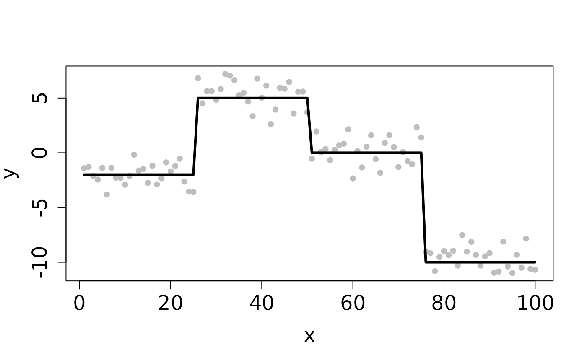
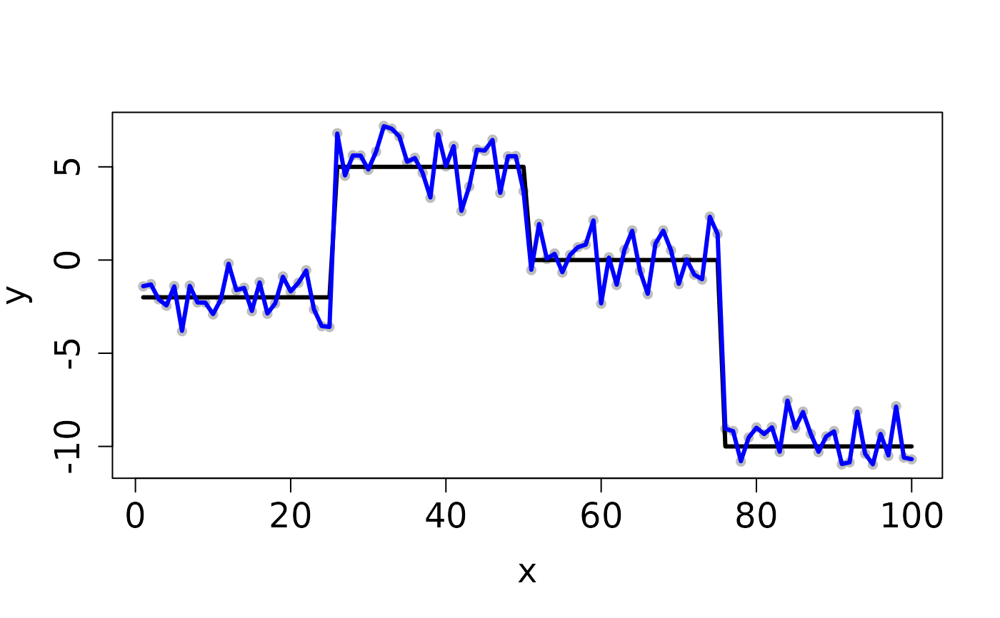
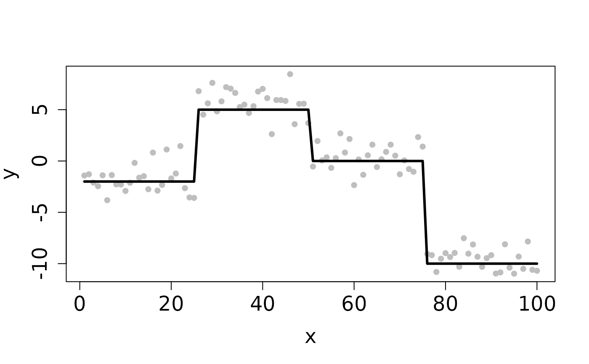
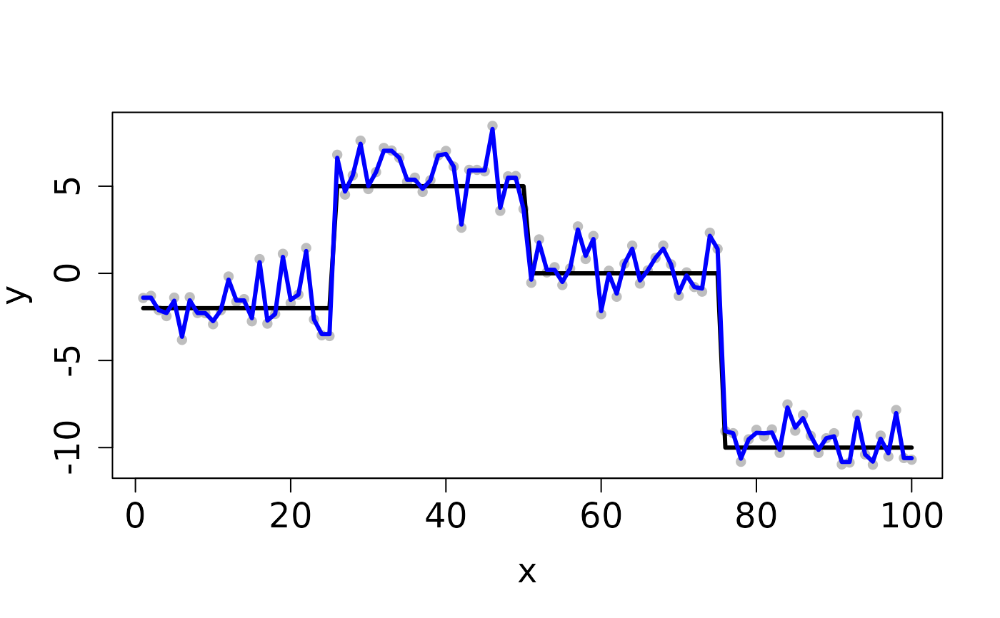

CV_L2E_TF_lasso.RdCV_L2E_TF_lasso performs k-fold cross-validation for robust trend filtering regression under the L2 criterion with the Lasso penalty
CV_L2E_TF_lasso( y, X, beta0, tau0, D, lambdaSeq, nfolds = 5, seed = 1234, method = "median", max_iter = 100, tol = 1e-04, trace = TRUE )
| y | Response vector |
|---|---|
| X | Design matrix. Default is the identity matrix. |
| beta0 | Initial vector of regression coefficients, can be omitted |
| tau0 | Initial precision estimate, can be omitted |
| D | The fusion matrix |
| lambdaSeq | A decreasing sequence of tuning parameter lambda, can be omitted |
| nfolds | The number of cross-validation folds. Default is 5. |
| seed | Users can set the seed of the random number generator to obtain reproducible results. |
| method | Median or mean to calculate the objective value |
| max_iter | Maximum number of iterations |
| tol | Relative tolerance |
| trace | Whether to trace the progress of the cross-validation |
Returns a list object containing the mean and standard error of the cross-validation error -- CVE and CVSE -- for each value of k (vectors), the index of the lambda with the minimum CVE and the lambda value itself (scalars), the index of the lambda value with the 1SE CVE and the lambda value itself (scalars), the sequence of lambda used in the regression (vector), and a vector listing which fold each element of y was assigned to
## Completes in 30 seconds set.seed(12345) n <- 100 x <- 1:n f <- matrix(rep(c(-2,5,0,-10), each=n/4), ncol=1) y <- y0 <- f + rnorm(length(f)) ## Clean Data plot(x, y, pch=16, cex.lab=1.5, cex.axis=1.5, cex.sub=1.5, col='gray')D <- myGetDkn(1, n) lambda <- 10^seq(-1, -2, length.out=20) cv <- CV_L2E_TF_lasso(y=y0, D=D, lambdaSeq=lambda, nfolds=2, seed=1234)#> Starting CV fold #1 #> Starting CV fold #2(lambda_min <- cv$lambda.min)#> [1] 0.01#> user system elapsed #> 0.073 0.004 0.077## Contaminated Data ix <- sample(1:n, 10) y[ix] <- y0[ix] + 2 plot(x, y, pch=16, cex.lab=1.5, cex.axis=1.5, cex.sub=1.5, col='gray')cv <- CV_L2E_TF_lasso(y=y, D=D, lambdaSeq=lambda, nfolds=2, seed=1234)#> Starting CV fold #1 #> Starting CV fold #2(lambda_min <- cv$lambda.min)#> [1] 0.08858668#> user system elapsed #> 0.063 0.000 0.063